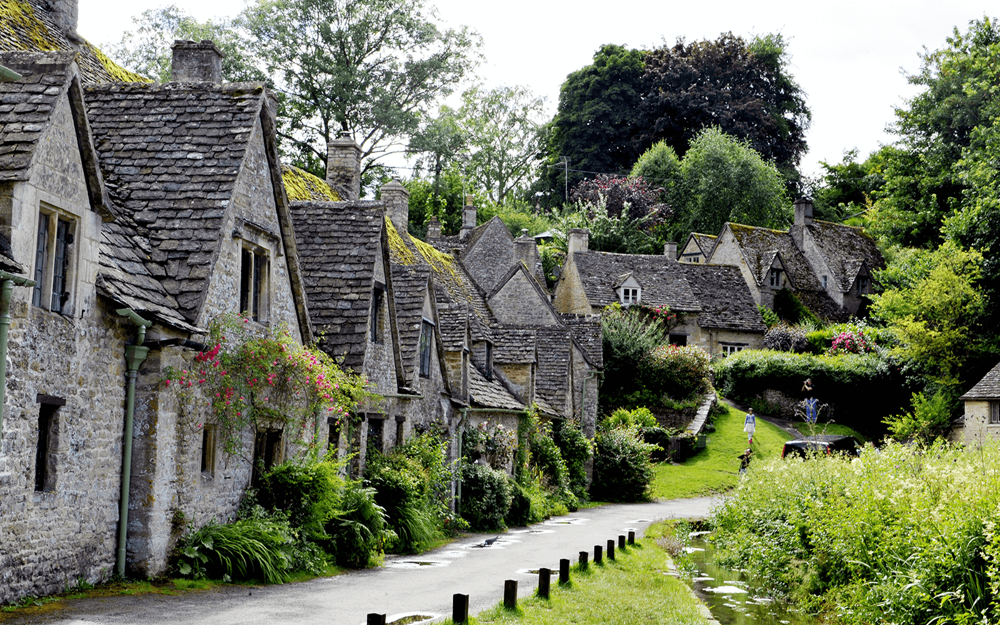
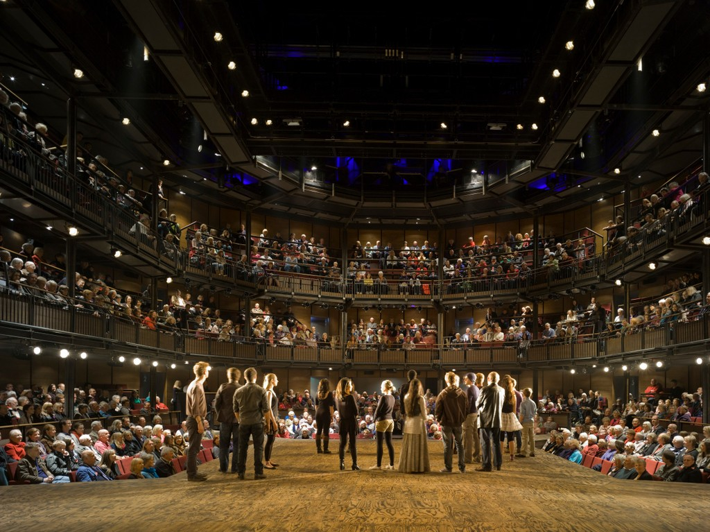
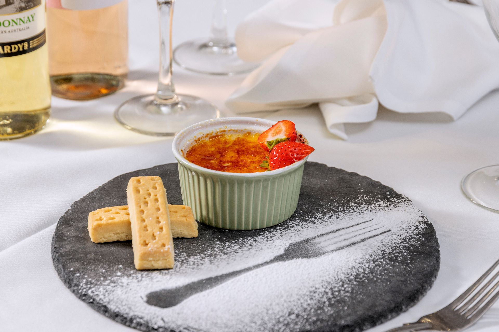

Business, Local Events & Travel
Convenient Hotel Near Birmingham Airport with Parking
Start your trip the right way by booking a relaxing stopover before or after your journey from BHX.

Explore the best of Shakespeare Country and the Warwickshire countryside from our doorstep.

From Shakespeare's Birthplace to riverside walks and world-class theatre, discover our curated guide to spending a perfect day in this historic market town, just 6 miles from Kings Court.
Read Full Guide →Start your trip the right way by booking a relaxing stopover before or after your journey from BHX.
Enjoy comfortable accommodation with convenient on-site EV chargers at Kings Court Hotel.

Just 19 miles from Kings Court lies one of Britain's finest medieval fortresses. Explore jousting tournaments, dungeons, and breathtaking views.

Honey-stone villages, winding lanes and picture-postcard scenery — the Cotswolds AONB begins just 15 miles from our grounds.

World-class performances on the banks of the Avon. Our guide to securing the best seats and making a night of it.

From strolls along the River Avon to rambles through ancient woodland, discover walking routes for every ability.

Warwickshire is blessed with award-winning producers. Here's where to find the finest cheeses, meats, and artisan goods.

From stunning Tudor architecture to manicured lawns, discover why Kings Court is the region's most beloved wedding venue.
Discover the history of this stunning Tudor manor house, its gardens, and key visiting tips just 5 minutes from the hotel.

Explore the Palladian grandeur, Capability Brown parklands, and major seasonal events near Alcester.
Spend a day at the Alcester Heritage Centre discovering archaeology, pottery, and the town's Roman heritage.
Follow our curated guide to birthplaces, theatres, and historic spots in Stratford-upon-Avon.
Explore the romantic history, beautiful orchards, and visiting tips for this famous thatched cottage.

Visit this rare circular 14th-century stone dovecote located just a short walk from Alcester.
Plan the perfect day trip to historic fortresses and honey-stone Cotswolds villages near Alcester.
Discover the agricultural roots, elegant architecture, and evolution of our historic Alcester hotel.
Explore spectacular moated manors, topiary masterpieces, and historic deer parks in South Warwickshire.
Plan a spectacular spring drive or cycle tour through 45 miles of pink and white orchards.
Plan your dream day with our guide to countryside wedding venues Warwickshire, including outdoor ceremonies and courtyard receptions.
Explore the most scenic wedding photography locations Alcester has to offer, from historic brickwork to private walled gardens.
Our comprehensive guide on how to choose a wedding venue Warwickshire couples can use to verify capacity, catering, and accommodation.
Discover the ultimate banquet hall hire Alcester options for weddings, reunions, and corporate galas inside our 19th-century farmstead.
Expert advice on selecting party venues near Stratford-upon-Avon, organizing menus, and arranging overnight stays.
Learn why our historic courtyard is the premier outdoor courtyard wedding venue Midlands couples choose for summer evenings.
Build your dream vendor team with our curated list of trusted local wedding suppliers Warwickshire.
Nostalgic and elegant baby shower ideas. Discover the premier afternoon tea baby shower venue Alcester has to offer.
Crisp air, log fires, and seasonal menus at one of the finest winter wedding venues Warwickshire has to offer.
Essential check-list questions when reviewing hotel event venues Alcester to ensure your banquet runs smoothly.
Indulge in the finest Sunday roasts near Alcester. Read our guide to finding the best Sunday lunch Alcester has to offer.
Discover the fascinating history of British afternoon tea and learn how we serve the best afternoon tea Alcester Warwickshire has to offer.
Learn about the local suppliers and ingredients on our seasonal menu. Discover why we lead restaurants in Alcester local produce sourcing.
Discover local real ales and craft gins in Warwickshire. Read our guide to finding traditional pubs Alcester area has to offer.
Read our comprehensive Alcester dining guide. Discover the best places to eat in Alcester, from cozy Tudor pubs to elegant hotel restaurants.
Discover why mid-week dining is the perfect choice. Find the best restaurants Alcester weekday dinner options at Kings Court Hotel.
Find the best outdoor dining Alcester spots. Explore the beautiful beer garden, courtyard, and terrace spaces at Kings Court Hotel this summer.
Learn the secrets to matching wine with classic British dishes. Book a food and wine pairing Alcester restaurant table at Kings Court Hotel.
Fuel your day of exploring with a hearty breakfast. Learn where to find the best Full English breakfast Alcester has to offer.
Discover the art of cooking the perfect steak. Visit the premier steak restaurant Alcester option inside the Garden Restaurant at Kings Court.
Plan your walking adventure with our guide to Oversley Wood walking trails Alcester. Discover wildlife and hiking routes.
Find the best bluebell woods Warwickshire has to offer this spring. Read our guide to visiting Oversley Wood and other local bluebell hotspots.
Explore the best cycling routes near Alcester and the Heart of England Way. Plan your cycling holiday with storage and routes.
Discover the most peaceful riverside walks Warwickshire has to offer. Walk along the River Arrow and River Alne starting directly from Alcester.
Plan your perfect golfing holiday with our guide to golf breaks Warwickshire. Discover the best courses near Alcester and Stratford.
Explore the honey-stone villages of the northern Cotswolds. Read our guide to exploring northern Cotswolds from Warwickshire.
Stay active during your business trip or holiday. Discover our on-site fitness facilities and hotels with gym Alcester options at Kings Court.
Discover the most scenic autumn walks Warwickshire has to offer. Find maps and guides to Oversley Wood and local trails in Alcester.
Plan your nature walk with our guide to Tiddesley Wood nature reserve walks. Discover birdwatching and woodland trails near Alcester.
Prepare for your countryside escape with our ultimate countryside staycation packing list UK. Pack the right gear for walking and dining.
Skip the busy city hotels. Discover why Alcester is the ideal base and hotels near NEC Birmingham with parking options.
Learn how to choose the right meeting facilities. Discover our leading conference venues Alcester meeting rooms at Kings Court Hotel.
Plan your visit to the famous Alcester Street Market in June. Find details on Alcester Street Market dates info and local guides.
Discover the history of the Alcester Mop Fair. Find details on Alcester Mop Fair events, dates, funfairs, and local history.
Plan your festive shopping trip with our guide to Christmas markets Warwickshire. Find dates and locations in Alcester and Stratford.
Travel green in Warwickshire. Learn about our on-site electric vehicle chargers and hotels with EV charging Alcester options at Kings Court.
Learn the benefits of booking directly with hotels. Find the best deals and cheap hotel rooms Alcester book direct options at Kings Court.
Get detailed travel directions from Birmingham Airport (BHX) to Alcester. Learn how to get to Alcester from Birmingham Airport.
Plan your next corporate retreat in the Midlands. Discover why we lead team building venues Warwickshire options at Kings Court Hotel.
Plan your perfect 48-hour countryside escape. Discover the ultimate weekend in Alcester things to do guide, featuring historic sights.